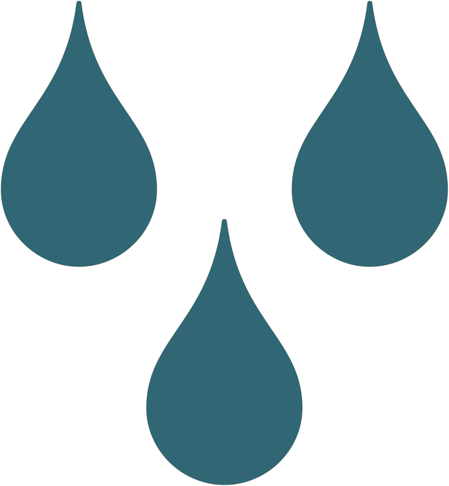

You can save gallons of water a year that would otherwise be used to support livestock.
That amount of water could nourish people per year.
That amount of water could nourish people per year.
You can save lbs of human-edible food a year that would otherwise be used to support livestock.
That would supply of someone's yearly food intake.
That would supply of someone's yearly food intake.
You can prevent lbs of CO2e from being emitted per year.
That would be like cutting greenhouse gas emissions from your vehicle by .
That would be like cutting greenhouse gas emissions from your vehicle by .
You could save a year from cutting back that much on meat.
That leaves you with more money to buy more things! Or better yet, to buy locally, sustainably raised meat.
That leaves you with more money to buy more things! Or better yet, to buy locally, sustainably raised meat.